Lecture 14 Log scales
The focus of this lecture is on log scales. The goal is to give you an intuition about when to use log scales and how to interpret them. We will refresh on basic log transformations and see how they affect how we can encode data in a variety of visualizations.
This lecture uses the following packages:
tidyverse14.1 Basic Log Review
14.1.1 Order of magnitude
Remember that the log of a number is the exponent required to transform the base into the input.
So that,
\[ log_{10} (x) = y \]
implies
\[ 10^y = x \]
Let’s use a concrete example where \(x\) is a vector of the integers from 1 to 100.
x <- 1:100
x## [1] 1 2 3 4 5 6 7 8 9 10 11 12 13 14 15 16 17
## [18] 18 19 20 21 22 23 24 25 26 27 28 29 30 31 32 33 34
## [35] 35 36 37 38 39 40 41 42 43 44 45 46 47 48 49 50 51
## [52] 52 53 54 55 56 57 58 59 60 61 62 63 64 65 66 67 68
## [69] 69 70 71 72 73 74 75 76 77 78 79 80 81 82 83 84 85
## [86] 86 87 88 89 90 91 92 93 94 95 96 97 98 99 100Let’s store the base 10 log of \(x\) in the vector \(y\):
y <- log(x, base = 10)
y <- log10(x)
y## [1] 0.0000000 0.3010300 0.4771213 0.6020600 0.6989700 0.7781513 0.8450980
## [8] 0.9030900 0.9542425 1.0000000 1.0413927 1.0791812 1.1139434 1.1461280
## [15] 1.1760913 1.2041200 1.2304489 1.2552725 1.2787536 1.3010300 1.3222193
## [22] 1.3424227 1.3617278 1.3802112 1.3979400 1.4149733 1.4313638 1.4471580
## [29] 1.4623980 1.4771213 1.4913617 1.5051500 1.5185139 1.5314789 1.5440680
## [36] 1.5563025 1.5682017 1.5797836 1.5910646 1.6020600 1.6127839 1.6232493
## [43] 1.6334685 1.6434527 1.6532125 1.6627578 1.6720979 1.6812412 1.6901961
## [50] 1.6989700 1.7075702 1.7160033 1.7242759 1.7323938 1.7403627 1.7481880
## [57] 1.7558749 1.7634280 1.7708520 1.7781513 1.7853298 1.7923917 1.7993405
## [64] 1.8061800 1.8129134 1.8195439 1.8260748 1.8325089 1.8388491 1.8450980
## [71] 1.8512583 1.8573325 1.8633229 1.8692317 1.8750613 1.8808136 1.8864907
## [78] 1.8920946 1.8976271 1.9030900 1.9084850 1.9138139 1.9190781 1.9242793
## [85] 1.9294189 1.9344985 1.9395193 1.9444827 1.9493900 1.9542425 1.9590414
## [92] 1.9637878 1.9684829 1.9731279 1.9777236 1.9822712 1.9867717 1.9912261
## [99] 1.9956352 2.0000000Notice in particular the following pattern:
log10(c(1, 10, 100, 1000, 10000))## [1] 0 1 2 3 4It is useful to think of the logarithm (log) as recording the order of magnitude of the input value.
library(tidyverse)
ggplot(data.frame(x = x, y = y), aes(x, y)) +
geom_point()
From looking at the scatter plot of \(x\) and \(y\) you should notice that the space between larger values is diminished relative to the space between smaller values.
14.1.2 Percent change
A useful feature of logged variables is that the difference between two logged values is proportional to the percentage change in the original values. So, if the difference between two logged values is the same as the difference between two other logged values, the percentage change across both sets is the same.
log10(110) - log10(100)## [1] 0.04139269(110 - 100)/100## [1] 0.1log10(220) - log10(200)## [1] 0.04139269(220 - 200)/200## [1] 0.1This is useful in visualizations because similar gaps in a log variable in different regions of the chart correspond to the same percentage change.
To test this let’s create a variable that grows by a fixed percentage.
constant_growth = 100 * (1.10) ^ (1:100)
constant_growth## [1] 110.0000 121.0000 133.1000 146.4100 161.0510
## [6] 177.1561 194.8717 214.3589 235.7948 259.3742
## [11] 285.3117 313.8428 345.2271 379.7498 417.7248
## [16] 459.4973 505.4470 555.9917 611.5909 672.7500
## [21] 740.0250 814.0275 895.4302 984.9733 1083.4706
## [26] 1191.8177 1310.9994 1442.0994 1586.3093 1744.9402
## [31] 1919.4342 2111.3777 2322.5154 2554.7670 2810.2437
## [36] 3091.2681 3400.3949 3740.4343 4114.4778 4525.9256
## [41] 4978.5181 5476.3699 6024.0069 6626.4076 7289.0484
## [46] 8017.9532 8819.7485 9701.7234 10671.8957 11739.0853
## [51] 12912.9938 14204.2932 15624.7225 17187.1948 18905.9142
## [56] 20796.5057 22876.1562 25163.7719 27680.1490 30448.1640
## [61] 33492.9803 36842.2784 40526.5062 44579.1568 49037.0725
## [66] 53940.7798 59334.8578 65268.3435 71795.1779 78974.6957
## [71] 86872.1652 95559.3818 105115.3200 115626.8519 127189.5371
## [76] 139908.4909 153899.3399 169289.2739 186218.2013 204840.0215
## [81] 225324.0236 247856.4260 272642.0686 299906.2754 329896.9030
## [86] 362886.5933 399175.2526 439092.7778 483002.0556 531302.2612
## [91] 584432.4873 642875.7360 707163.3096 777879.6406 855667.6047
## [96] 941234.3651 1035357.8016 1138893.5818 1252782.9400 1378061.2340qplot(1:100, constant_growth)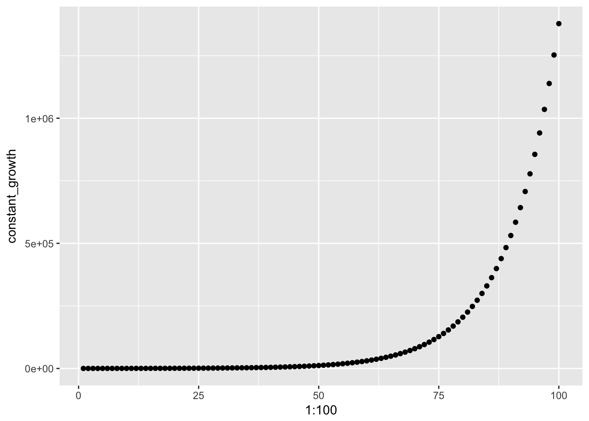
qplot(1:100, log(constant_growth))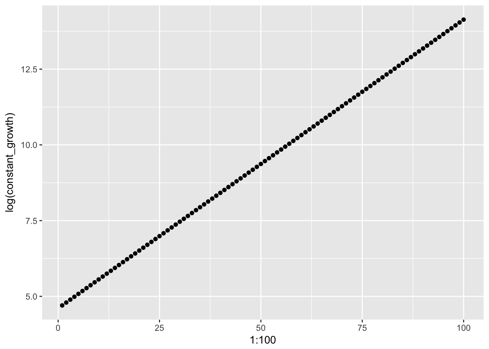
diff(x) returns a vector of the differences between consecutive values of x:
diff(constant_growth)## [1] 11.00000 12.10000 13.31000 14.64100 16.10510
## [6] 17.71561 19.48717 21.43589 23.57948 25.93742
## [11] 28.53117 31.38428 34.52271 37.97498 41.77248
## [16] 45.94973 50.54470 55.59917 61.15909 67.27500
## [21] 74.00250 81.40275 89.54302 98.49733 108.34706
## [26] 119.18177 131.09994 144.20994 158.63093 174.49402
## [31] 191.94342 211.13777 232.25154 255.47670 281.02437
## [36] 309.12681 340.03949 374.04343 411.44778 452.59256
## [41] 497.85181 547.63699 602.40069 662.64076 728.90484
## [46] 801.79532 881.97485 970.17234 1067.18957 1173.90853
## [51] 1291.29938 1420.42932 1562.47225 1718.71948 1890.59142
## [56] 2079.65057 2287.61562 2516.37719 2768.01490 3044.81640
## [61] 3349.29803 3684.22784 4052.65062 4457.91568 4903.70725
## [66] 5394.07798 5933.48578 6526.83435 7179.51779 7897.46957
## [71] 8687.21652 9555.93818 10511.53200 11562.68519 12718.95371
## [76] 13990.84909 15389.93399 16928.92739 18621.82013 20484.00215
## [81] 22532.40236 24785.64260 27264.20686 29990.62754 32989.69030
## [86] 36288.65933 39917.52526 43909.27778 48300.20556 53130.22612
## [91] 58443.24873 64287.57360 70716.33096 77787.96406 85566.76047
## [96] 94123.43651 103535.78016 113889.35818 125278.29400Taking a look at the differences of the logged constant growth variable we see that we the change across values is now constant.
diff(log(constant_growth))## [1] 0.09531018 0.09531018 0.09531018 0.09531018 0.09531018 0.09531018
## [7] 0.09531018 0.09531018 0.09531018 0.09531018 0.09531018 0.09531018
## [13] 0.09531018 0.09531018 0.09531018 0.09531018 0.09531018 0.09531018
## [19] 0.09531018 0.09531018 0.09531018 0.09531018 0.09531018 0.09531018
## [25] 0.09531018 0.09531018 0.09531018 0.09531018 0.09531018 0.09531018
## [31] 0.09531018 0.09531018 0.09531018 0.09531018 0.09531018 0.09531018
## [37] 0.09531018 0.09531018 0.09531018 0.09531018 0.09531018 0.09531018
## [43] 0.09531018 0.09531018 0.09531018 0.09531018 0.09531018 0.09531018
## [49] 0.09531018 0.09531018 0.09531018 0.09531018 0.09531018 0.09531018
## [55] 0.09531018 0.09531018 0.09531018 0.09531018 0.09531018 0.09531018
## [61] 0.09531018 0.09531018 0.09531018 0.09531018 0.09531018 0.09531018
## [67] 0.09531018 0.09531018 0.09531018 0.09531018 0.09531018 0.09531018
## [73] 0.09531018 0.09531018 0.09531018 0.09531018 0.09531018 0.09531018
## [79] 0.09531018 0.09531018 0.09531018 0.09531018 0.09531018 0.09531018
## [85] 0.09531018 0.09531018 0.09531018 0.09531018 0.09531018 0.09531018
## [91] 0.09531018 0.09531018 0.09531018 0.09531018 0.09531018 0.09531018
## [97] 0.09531018 0.09531018 0.0953101814.1.3 Histogram comparison
We can also compare the histogram of a normal distribution to a distribition that would be normal if we applied logs.
qplot(rnorm(10000, mean = 10, sd = 1), main = "Normal Distribution")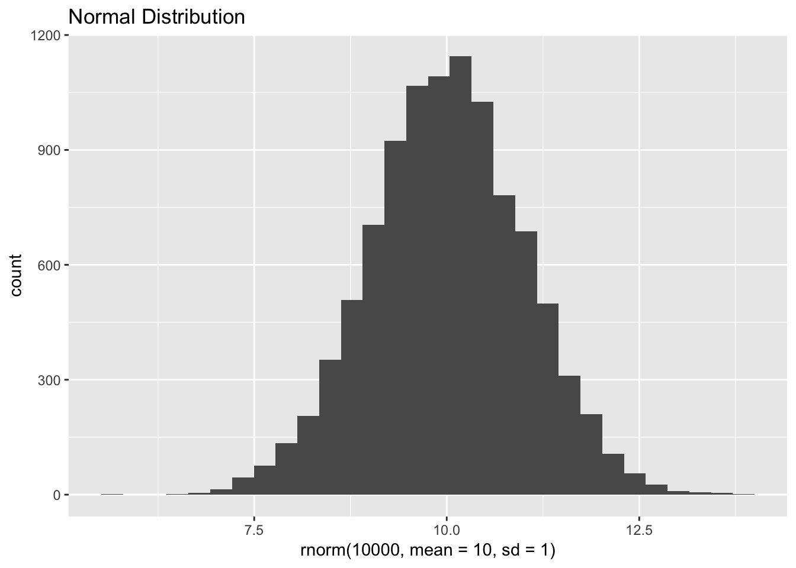
qplot(exp(rnorm(10000, mean = 10, sd = 1)), main = "Log-normal distribution")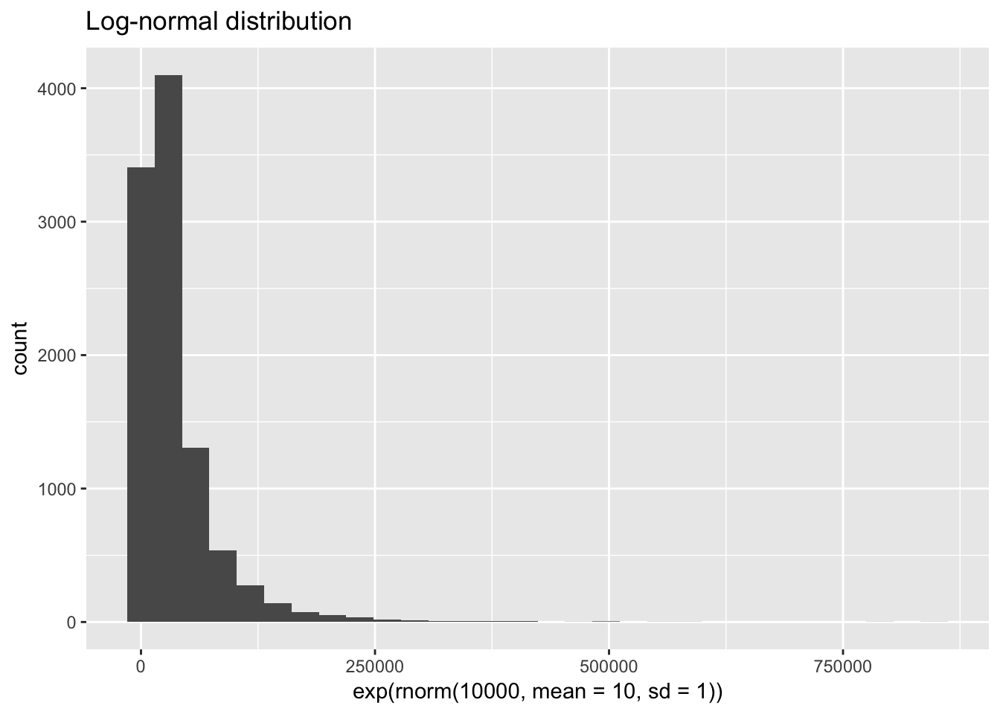
14.2 Data
For a practical application of logs we’ll look back at income. This time we’re using zip-code level data from the IRS Statistics of Income (SOI) program.
There are a variety of datasets available on individual income (form 1040). From the main zip-code data page, click the link to the 2015 data, then download the CSV for all states without AGI. The file with AGI breaks down the observations further into ranges of adjusted gross income (AGI). We will instead focus on the zip-level data across all AGI groups. You will also want to download the documentation to determine which variables we want to keep and how to interpret them.
raw_irs <- read_csv("data/15zpallnoagi.csv")
irs <- raw_irs %>%
filter(ZIPCODE != '00000') %>% # remove state-level summary
transmute(
zip = ZIPCODE,
state = STATE,
households = N1,
population = N2,
agi = A00100,
agi_pc = agi / population,
total_income = A02650,
wages = A00200,
farms = SCHF,
farm_proportion = farms / households,
taxes = A10300,
taxes_pc = taxes / population,
taxes_agi = taxes / agi,
taxes_total_income = taxes / total_income
)
as.tibble(irs)## # A tibble: 27,729 x 14
## zip state households population agi agi_pc total_income wages
## <chr> <chr> <dbl> <dbl> <dbl> <dbl> <dbl> <dbl>
## 1 35004 AL 5110 10390 280757 27.02185 283221 231704
## 2 35005 AL 3260 6450 130927 20.29876 131832 105561
## 3 35006 AL 1230 2640 59415 22.50568 59695 46379
## 4 35007 AL 12170 25760 693284 26.91320 701514 554651
## 5 35010 AL 8160 17020 378765 22.25411 382646 261568
## 6 35014 AL 1610 3150 73119 23.21238 73864 56756
## 7 35016 AL 7010 14310 357800 25.00349 361470 263648
## 8 35019 AL 890 1930 37188 19.26839 37640 29847
## 9 35020 AL 9570 19680 257275 13.07292 259289 217474
## 10 35022 AL 9770 19160 546843 28.54087 552470 434932
## # ... with 27,719 more rows, and 6 more variables: farms <dbl>,
## # farm_proportion <dbl>, taxes <dbl>, taxes_pc <dbl>, taxes_agi <dbl>,
## # taxes_total_income <dbl>14.3 Logs in position
14.3.1 Population size and AGI per capita
Let’s take a look first at the distribution of population and adjusted gross income per capita across zipcodes:
ggplot(irs, aes(population, agi_pc)) +
geom_point()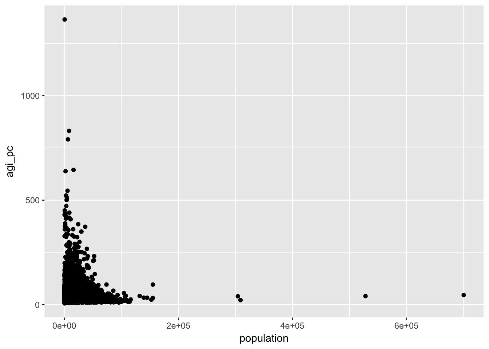
Remember that the log transformation compresses the space between larger values. Our scatter plot indicates that smaller values are currently more compressed. This is a signal that we should log transform our variables. The log transformation is useful for some of the assumptions of linear modelling. In the visual explorations here, the choice to log transform is largely aesthetic. If log transforming a variable makes it easier to visually inspect and understand your data, than it is useful.
14.3.2 Histogram comparison
Let’s look at the histogram for the population:
ggplot(irs, aes(population)) + geom_histogram()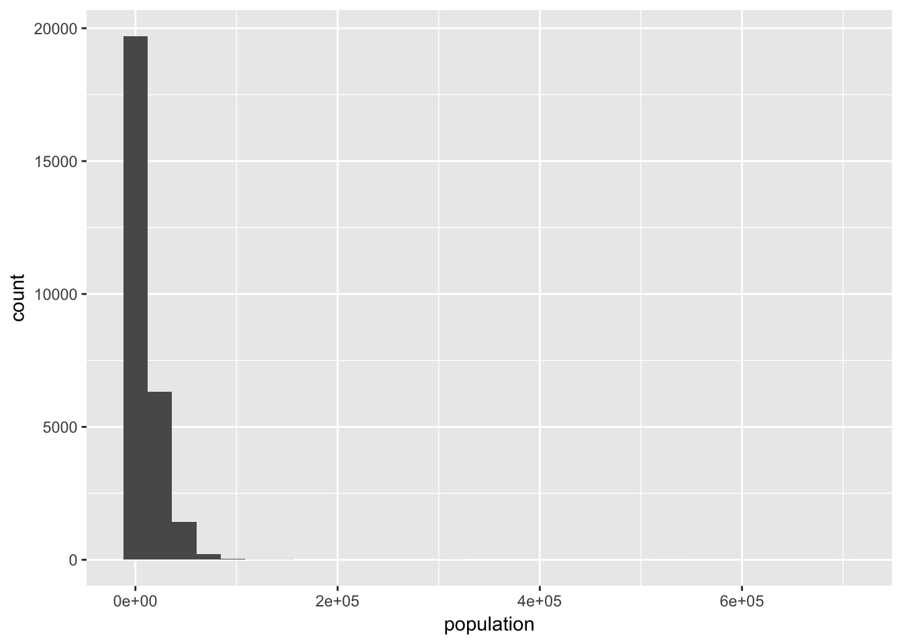
And now the logged version:
ggplot(irs, aes(population)) + geom_histogram() + scale_x_log10()
While the logged version of population feels closer to a normal distribution, it is clearly not normally distributed. Even though population across zip codes is not exactly log-normally distributed, it is still useful for creating easier to interpret and analyze visualizations.
ggplot(irs, aes(population, agi_pc)) +
geom_point(alpha = 0.1) +
geom_smooth() +
scale_x_log10(labels = scales::comma) +
scale_y_log10()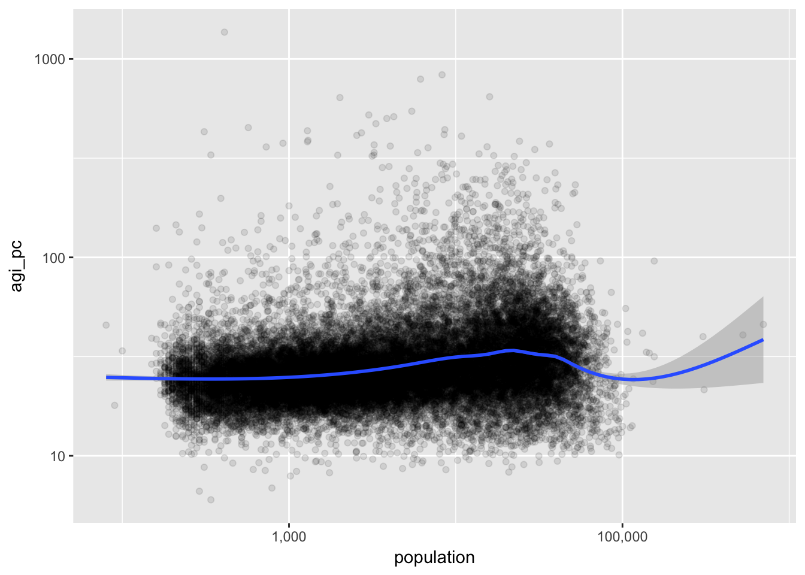
14.3.3 Taxes and Farms
Let’s plot two proportions: the proportion of returns in a zipcode representing farms, farm_proportion, and the proportion of total income that is tax liability, taxes_total_income.
ggplot(irs, aes(farm_proportion, taxes_total_income)) +
geom_point() +
geom_smooth()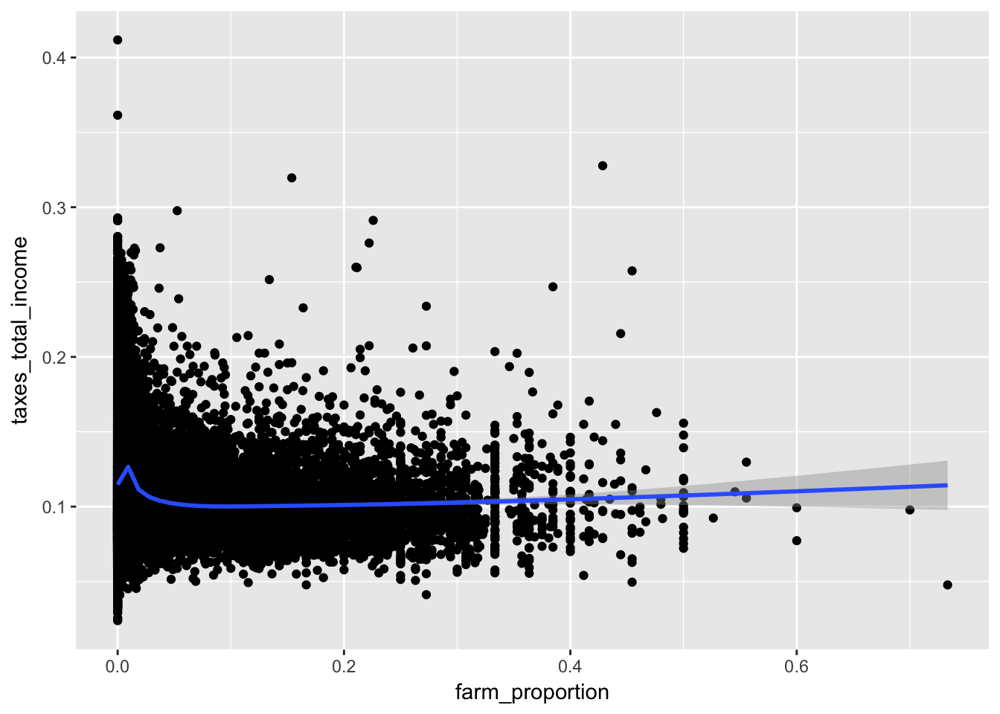
While the data is densely packed near the origin, it does not mean it would be appropriate to log these variables. Keep in mind that the log of 0 is undefined and in the limit from the right is negative infinty. We can manually remove these values with a filter.
ggplot(irs, aes(farm_proportion, taxes_total_income)) +
geom_point() +
geom_smooth() +
scale_x_continuous(labels = scales::percent) +
scale_y_log10(labels = scales::percent) 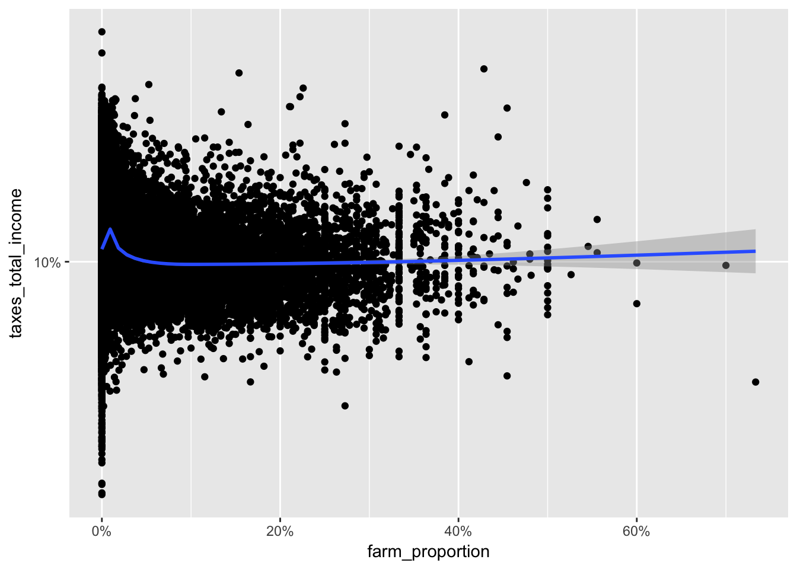
14.4 Logs in color
Let’s tweak the last visualization by encoding agi_pc in the color of the points.
ggplot(irs %>% filter(farm_proportion > 0), aes(farm_proportion, taxes_total_income, color = agi_pc)) +
geom_point() +
scale_x_log10(labels = scales::percent) +
scale_y_log10(labels = scales::percent) 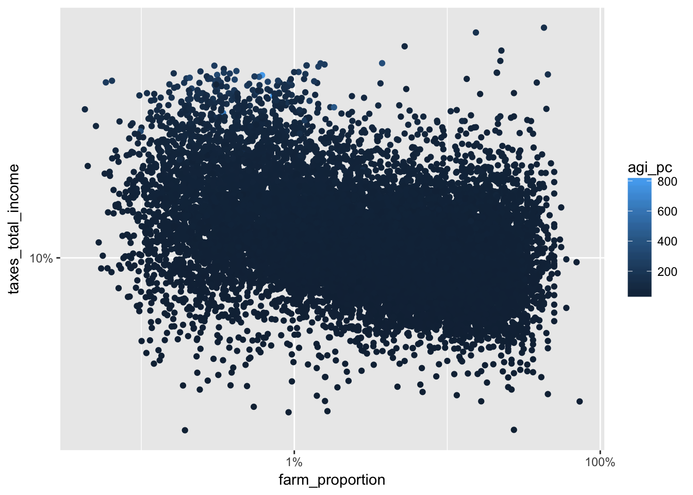
Using the transformation log10 (see trans in the ?continuous_scale documentation), we get a more gradual shift in color that makes it easier to see the changes in per capita adjusted gross income.
ggplot(irs %>% filter(farm_proportion > 0), aes(farm_proportion, taxes_total_income, color = agi_pc)) +
geom_point() +
scale_x_log10(labels = scales::percent) +
scale_y_log10(labels = scales::percent) +
scale_color_continuous(trans = "log10")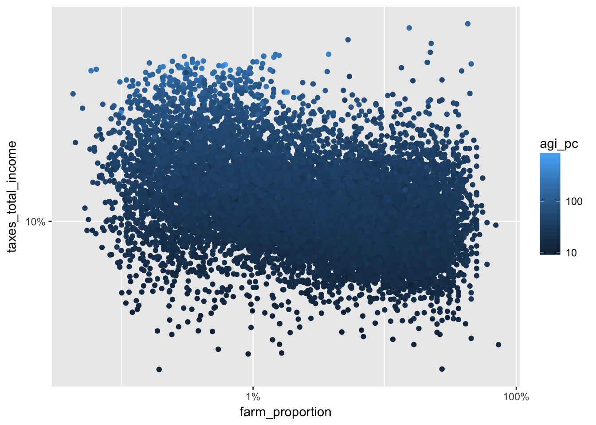
We can finally change the low and high colors and add alpha to make our scatter plot easier to read. Note that I have added a log transformation to the size, which is tied to the population variable. Remove the log transformation to see the difference.
library(scales)
ggplot(irs %>% filter(farm_proportion > 0), aes(farm_proportion, taxes_total_income, color = agi_pc)) +
geom_point(aes(size = population), alpha = 0.1) +
scale_x_log10(labels = scales::percent) +
scale_y_log10(labels = scales::percent) +
scale_color_continuous(trans = "log10", low = scales::muted("red"), high = scales::muted("blue")) +
scale_size_continuous(trans = "log10")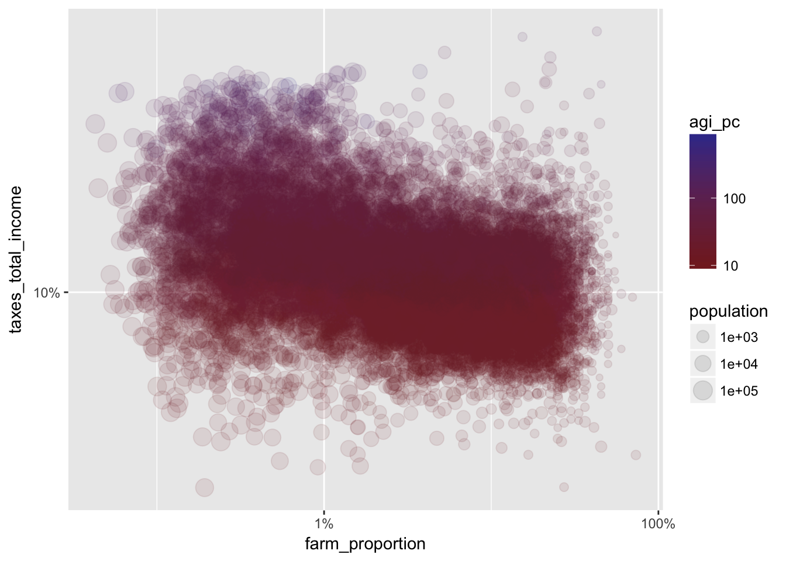
14.5 Assignment
Choose two different variables from the irs dataset to visualize. Choose whether or not to log each variable in your visualization and explain why that was the right choice. Show at least one alternative (logged version vs. raw values) visualization and discuss how it compares to your preferred choice.